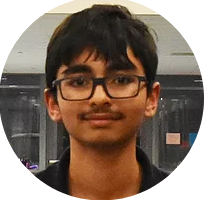

About Me:
Hi, My Name is Mannan Shukla, I'm a member of the Robbinsville High School Class of 2022. I would describe myself as a technology enthusiast. I joined FTC 14020 in the hopes that I would get to use some of my Java skills to control the robot and learn more about what goes into programming something that goes beyond just the command line. After this season, I came away with valuable skills such as git version control, getting around the linux terminal, working with computer vision and control systems. Beyond robotics, I put my time into ricing my Linux environment, school activities and playing quality games on my Wii. I hope to go to University of California, Berkeley majoring in Computer Science. I hope to work in the field of Artificial Intelligence and Machine Learning.
My Journey:
My experiences as a part of Nemesis Prime will stay with me for a very long time, I have really grown as a person and have learned valuable skills along the way. In the beginning of the season, I didn't know many people that were not in my grade or in my immediate friends group. Now, most of the people I talk to are from robotics, it has helped me network with people better. Communication is important, and if it were not for Nemesis Prime, I would have not known the extent of this. Communication is used everywhere, I made a change to someone else's code, its important that I tell them. I also had to speak to the build team in regards to placement of systems such as the Webcam, which is crucial to the success of the mission. The drive team had to know the new controls as well as help debugging connection problems. Communication with people outside of the team is also important. I learned how to talk to sponsors and strike the balance between talking technical and keeping your audience from understanding your content. I also learned how to talk to judges, make sure that they can understand your content, see your process and get to know what makes the product stand out from the rest. On the technical side, I learned how to structure code and the idea of a codebase, I also learned the value of social coding and coding with other people. Before FTC, I had really only coded solo. While this gave me full control over what I was doing, it wasn't open to other, sometimes better ideas. Working with other people has allowed me to see other views when it comes to potential solutions to problems, and how I can communicate my own solutions to the discussion. I also learned many things on the build side of things, I had no idea about the prototyping process as well as using heavy machinery before joining Nemesis Prime. Overall, if it were not for Nemesis Prime, I would be a very different person. I have no regrets joining Nemesis Prime and hope to continue my robotics journey through High School.